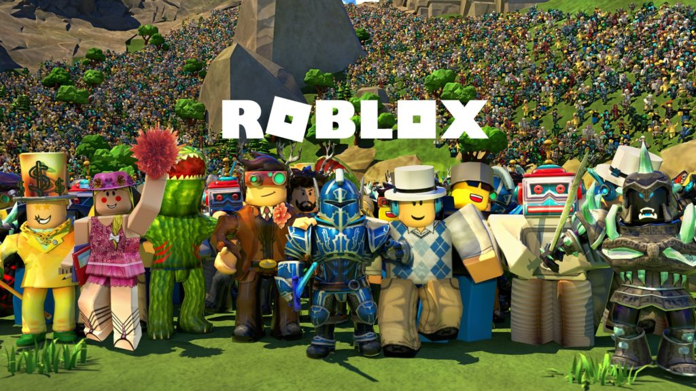
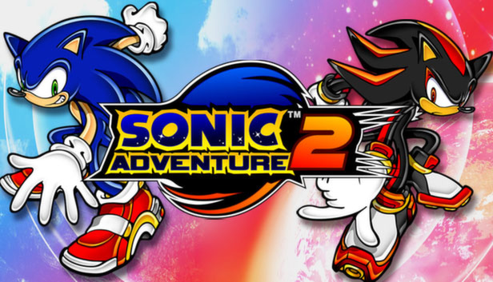

1.Minecraft

Minecraft (від англ. mine craft — досл. «шахтарське ремесло») — незалежна відеогра (інді-гра) студії Mojang 2011 року жанру «пісочниця» у відкритому світі з виглядом від першої/третьої особи. Гра започаткувала однойменну серію, для всіх творів якої характерний мінімалістичний кубічний дизайн.
Ця гра передусім дає змогу виразити свою креативність. Розроблена шведським програмістом Маркусом Перссоном, відомим також як «Notch», і надалі випускається заснованою Маркусом Перссоном компанією Mojang, котра належить Microsoft Studios. Minecraft належить до ігор з найширшою аудиторією і є найпродаванішою відеогрою в історії.
Відео з гри ->
Фото з гри

2.Roblox
Roblox (дата анонсування 1997, дата випуску 2006, також відомий, як DynaBlocks) — світова online-платформа для створення ігор. Користувачі Roblox (зокрема діти, підлітки) можуть створювати свої ігри за допомогою Roblox Studio (див. нижче), грати в ігри, створені іншими користувачами, а також створювати, одягати свого Roblox-персонажа (деякі товари в Roblox -каталог можна купити за ігрову валюту — Robux).
Будь-який користувач може завантажити Roblox Studio на свій комп'ютер і створювати місця (англ. Places). Плейси можна буде опублікувати на свій профіль в Roblox. Також творці можуть використовувати ігрову валюту в своїх міні-іграх — Robux (див. Ігрова валюта). За них можна купувати товари або послуги в грі.
Відео з гри ->
Фото з гри

3.Тетріс

Тетріс — відеогра-головоломка, розроблена Олексієм Пажитновим та його колегами. Перша версія гри була представлена 6 червня 1984 року, коли він працював в ОЦ Академії наук СРСР в Москві. Назву гри автор створив поєднавши грецький префікс «тетра-» зі словом «теніс» — улюбленою грою Пажитнова.
Ця гра в тому чи іншому вигляді існує майже для кожної ігрової консолі та операційної системи, а також для інших електронних пристроїв: мобільних телефонів, портативних медіаплеєрів, кишенькових комп'ютерів тощо.
Відео з гри ->
Фото з гри

4.Sonic Adventure 2
Sonic Adventure 2 (яп. ソニックアドベンチャー2, Сонікку Адобентя: Цу, укр. Пригоди Соніка 2) — відеогра у жанрі платформера, розроблена Sonic Team USA і видана компанією Sega для гральної консолі Dreamcast, в червні 2001 року; через десять років після виходу першої гри серії. Після припинення підтримки консолі Dreamcast компанією Sega в 2002 році, гра була перевидана для консолі Nintendo GameCube під назвою Sonic Adventure 2 Battle; де значні зміни, внесені в цю версію, торкнулися багатокористувацької гри й чао-садів. У жовтні 2012 року гра була портована на приставки PlayStation 3 та Xbox 360 розповсюджуючись через сервіс цифрової дистрибуції PlayStation Network і Xbox Live Arcade, а в листопаді й на Microsoft Windows через сервіс Steam.
Гра ділиться на «світлу» та «темну» історії. Дія відбувається на планеті, схожій на Землю. Їжак Сонік та його друзі, у тому числі доктор Еґман, який приєднався до них, намагаються працювати разом, щоб врятувати світ від руйнування. Розробка сиквелу розпочалася у 1999 після виходу Sonic Adventure. Керівником проєкту став провідний дизайнер Sonic the Hedgehog 3 Такасі Іізука, а творець серії Юдзі Нака виступив у ролі продюсера.Продовження отримало безліч позитивних відгуків, проте система віртуальних камер і більшість ігрового процесу були піддані критиці. Попри високі оцінки, оригінал погано продавався через слабкі продажі приставки Dreamcast. Наступні перевидання отримали нейтральні відгуки, але були дуже успішними з фінансової точки зору. У 2005 році на консолях GameCube, PlayStation 2 та Xbox була випущена гра Shadow the Hedgehog, сюжет якої тісно пов'язаний із подіями Sonic Adventure 2.